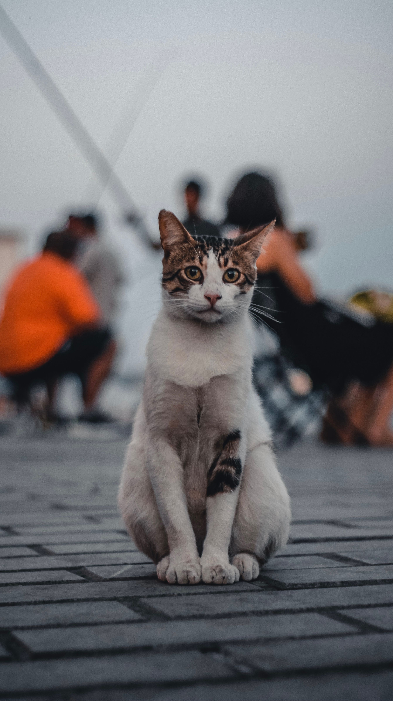
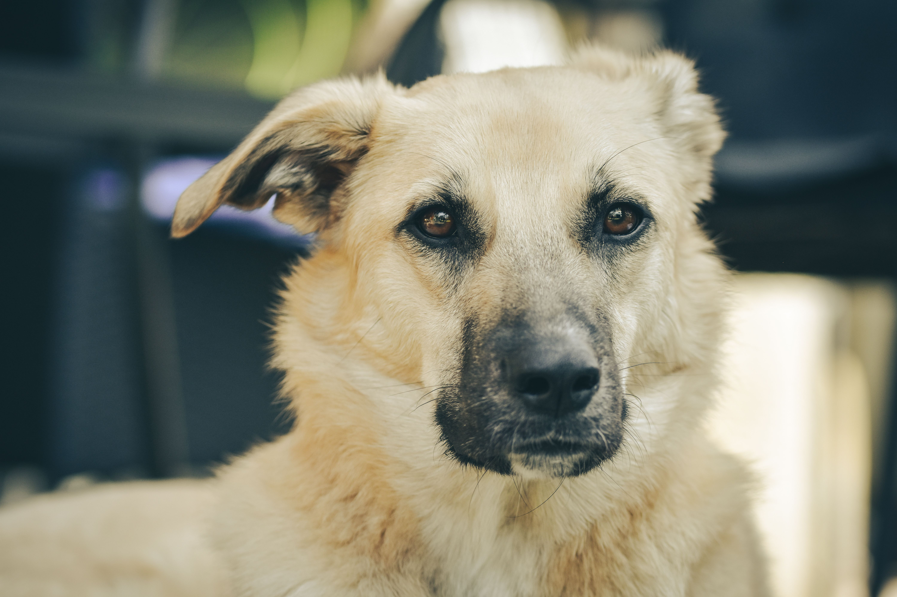
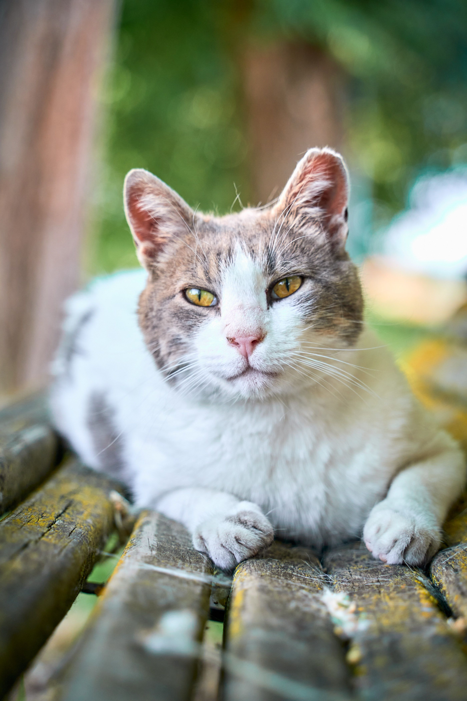

Nuestras mascotas
Encuentra a tu compañero ideal con los filtros.





Luna
✕Gata · 2 años · Pequeña
Vacunada
Esterilizada
Sociable
Luna es una gata cariñosa y juguetona. Se lleva bien con niños y otros gatos, y busca un hogar tranquilo donde pueda recibir mucho amor.
Edad2 años
TamañoPequeña
Peso4 kg
UbicaciónCiudad